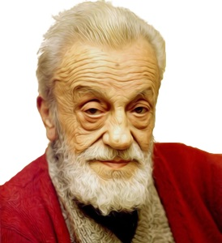

Eflatun Cem Güney

Malatya’nın Hekimhan ilçesinde dünyaya geldi. Henüz çok küçük bir çocukken, hem anne hem de babasını kaybetmesi nedeniyle 1903 yılında amcasının yanına Sivas’a taşındı. Eflatun Cem Güney, Sivas’a yerleştikten sonra öncelikle Sivas Fevziye İbtidaisi’ne kaydoldu, burada başarılı bir şekilde eğitim gördü ve mezun oldu. Ardından Sivas İdadisi ve Sivas Sultanisi’nde öğrenimine devam etti (Emiroğlu 2005). Devamı İçin Tıklayınız
Halide Edip Adıvar

Halide Edip Adıvar (d. 1884 - ö. 9 Ocak 1964), Türk yazar, siyasetçi, akademisyen, öğretmendir. Halide Onbaşı olarak da bilinir.
Halide Edip, 1919 yılında İstanbul halkını ülkenin işgaline karşı harekete geçirmek için yaptığı konuşmaları ile zihinlerde yer etmiş usta bir hatiptir. Kurtuluş Savaşı'nda cephede Mustafa Kemal'in yanında görev yapmış bir sivil olmasına rağmen rütbe alarak savaş kahramanı sayılmıştır. Savaş yıllarında Anadolu Ajansı'nın kurulmasında rol alarak gazetecilik de yapmıştır. Devamı İçin Tıklayınız
Necip Fazıl Kısakürek

(26 Mayıs 1904, İstanbul - 25 Mayıs 1983, İstanbul), Türk şair, yazar ve düşünür.
Necip Fazıl Kısakürek, 26 mayıs 1904'de İstanbul'da doğdu. Maraşlı bir ailenin tek çocuğu olan Fazıl'a 'Ahmet Necip' adı verildi. 1934 tarihinde bir Nakşî şeyhi olan Abdülhakîm Arvâsî ile tanıştı. 1941 yılında Fatma Neslihan Balaban ile evlendi. Bu evlilikten beş çocuğu oldu. Devamı İçin Tıklayınız